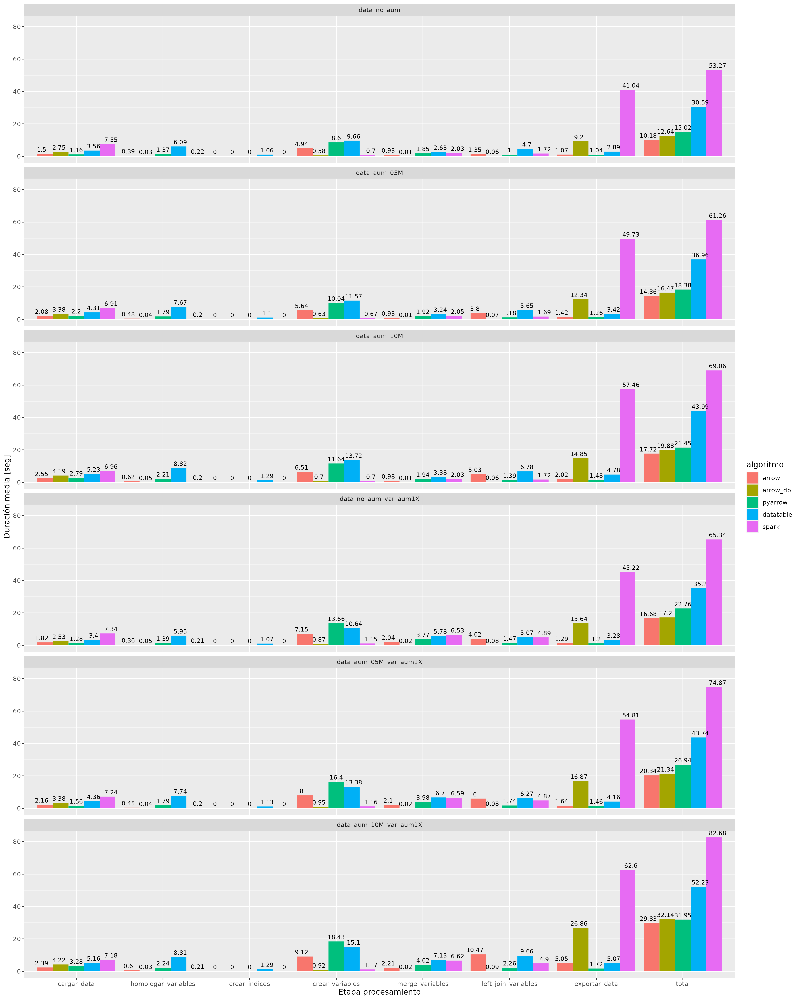

# read feather
columnas_selected <- c(
"NHOGAR",
"P07",
"P08",
"P09",
"P11",
...
)
filename <- "Microdato_Censo2017-Personas__data_no_aumentado_arrow_withnrow.feather"
persona <- arrow::read_feather(filename, as_data_frame=F, col_select=columnas_selected) # returns arrow Table
# create and read dataset
cols_partition <- c("REGION","PROVINCIA","COMUNA")
format_dataset <- "feather"
#
path_dataset <- paste0(ubi,"test_arrow_dataset_in_tmp")
arrow::write_dataset(persona, path_dataset, format=format_dataset, partitioning=cols_partition)
persona <- arrow::open_dataset(path_dataset, format=format_dataset, partitioning=cols_partition) # returns arrow Dataset

Mentoría Grandes Volúmenes de Datos
Proyecto Ciencia de Datos
Octubre 2023
Tabla de contenidos
- Problema y Desafíos asociados
- Herramientas para datos grandes
- Tests realizados
- Resultados
- Conclusión
Problema y Desafíos
El desarrollo del Censo 2024 involucra la generación de un gran volumen de datos.
Por ejemplo para Censo 2017:
- Registros corresponden a personas, con sus respectivas viviendas y hogares.
- 17.574.003 personas, 6.499.355 viviendas (6.486.533 particulares y 12.822 colectivas), 5.651.637 hogares.
- Vivienda: todo aquello que se ha construido, adaptado o dispuesto para el alojamiento de personas.
- Particulares o colectivas. Particulares pueden estar habitadas por personas que constituyen uno o más hogares.
- Hogar: 1+ personas que unidas o no por parentezco, alojaron la noche del 18-19.04 en una misma vivienda y se benefician de un mismo presupuesto de alimentación.
Problema y Desafíos
El desarrollo del Censo 2024 involucra la generación de un gran volumen de datos.
Por ejemplo para Censo 2017:
Problema y Desafíos
El desarrollo del Censo 2024 involucra la generación de un gran volumen de datos.
Estos datos requieren ser revisados, mediante la creación de variables auxiliares que se utilizan para validar la información censada.
Este proceso debe ser eficiente, rápido y confiable. Lo que conlleva varios desafíos:
- Para Censo:
- Cargar, procesar y escribir grandes volúmenes de datos (17M+ de registros) en el menor tiempo posible.
- Poder obtener resultados que sean reproducibles a discreción.
- Cargar, procesar y escribir grandes volúmenes de datos (17M+ de registros) en el menor tiempo posible.
- Desde la Ciencia de Datos:
- Encontrar la herramienta más apropiada para el tratamiento de este volumen de datos.
- Para ellos evaluamos diferentes escenarios de procesamiento, que definimos en base a la herramienta usada para procesar los datos, el volumen de los datos y la cantidad de variables auxiliares creadas.
- Encontrar la herramienta más apropiada para el tratamiento de este volumen de datos.
Herramientas para datos grandes


Herramientas para datos grandes
Apache Arrow:
- Caja de herramientas multi-lenguaje para intercambio de datos acelerado y procesamiento in-memory.
- Intercambio de datos acelerado:
- Aplicaciones escritas en diferentes lenguajes que requieren intercambiar data entre ellas: costo al copiar y convertir (serializar).
Herramientas para datos grandes
Apache Arrow:
- Caja de herramientas multi-lenguaje para intercambio de datos acelerado y procesamiento in-memory.
- Intercambio de datos acelerado:
- Aplicaciones escritas en diferentes lenguajes que requieren intercambiar data entre ellas: costo al copiar y convertir (serializar).
- Arrow provee un formato in-memory estándar y reduce costo de serialización.
Herramientas para datos grandes
Apache Arrow:
- Caja de herramientas multi-lenguaje para intercambio de datos acelerado y procesamiento in-memory.
- Procesamiento eficiente in-memory:
- Registros en una misma columna tienden a ser similares entre sí.
Herramientas para datos grandes
Apache Arrow:
- Caja de herramientas multi-lenguaje para intercambio de datos acelerado y procesamiento in-memory.
- Procesamiento eficiente in-memory:
- Registros en una misma columna tienden a ser similares entre sí.
Herramientas para datos grandes
Apache Arrow:
- Caja de herramientas multi-lenguaje para intercambio de datos acelerado y procesamiento in-memory.
- Procesamiento eficiente in-memory:
- Registros en una misma columna tienden a ser similares entre sí.
Herramientas para datos grandes
Apache Arrow:
- Caja de herramientas multi-lenguaje para intercambio de datos acelerado y procesamiento in-memory.
- Procesamiento eficiente in-memory:
- Registros en una misma columna tienden a ser similares entre sí.
- Organización columnar permite ejecutar la misma instrucción para procesar partes adjacentes de memoria: vectorizar operaciones en cpu.
Herramientas para datos grandes
Apache Arrow:
- Caja de herramientas multi-lenguaje para intercambio de datos acelerado y procesamiento in-memory.
- Librerías:
- Implementaciones en C++, JavaScript, Rust, etc. son independientes entre sí.
Herramientas para datos grandes
Apache Arrow:
- Caja de herramientas multi-lenguaje para intercambio de datos acelerado y procesamiento in-memory.
- Librerías:
- Implementaciones en C++, JavaScript, Rust, etc. son independientes entre sí.
- Implementaciones en R y Python tienen bindings a librería en C++.
Herramientas para datos grandes
Apache Arrow:
- Caja de herramientas multi-lenguaje para intercambio de datos acelerado y procesamiento in-memory.
- Librerías:
- Implementaciones en C++, JavaScript, Rust, etc. son independientes entre sí.
- Implementaciones en R y Python tienen bindings a librería en C++.
- Implementación en R permite ejecutar operaciones analíticas, agregaciones y joins sobre objetos Table and Dataset a través de librería dplyr.
Herramientas para datos grandes
Apache Arrow:
- Caja de herramientas multi-lenguaje para intercambio de datos acelerado y procesamiento in-memory.
- Librerías:
- Implementaciones en C++, JavaScript, Rust, etc. son independientes entre sí.
- Implementaciones en R y Python tienen bindings a librería en C++.
- Implementación en R permite ejecutar operaciones analíticas, agregaciones y joins sobre objetos Table and Dataset a través de librería dplyr.
- Implementación en Python permite realizar el mismo tipo de operaciones sobre un objeto Table. Y además conversiones desde Table a pandas.DataFrame y NumPy.array.
Herramientas para datos grandes
Apache Spark:
- Framework para el procesamiento distribuido de grandes datos.
- Procesos Spark:
- Coordinados por el objeto SparkContext en nuestro programa main (driver).
- SparkContext se conecta a un Cluster Manager (Standalone, YARN, Kubernetes) que asigna los recursos del cluster.
- Procesamiento escala horizontalmente y se distribuye en múltiples nodos (worker nodes) del cluster.
Herramientas para datos grandes
Apache Spark:
- Framework para el procesamiento distribuido de grandes datos.
- Procesamiento escala horizontalmente y se distribuye en múltiples nodos de un cluster.
Herramientas para datos grandes
Apache Spark:
- Framework para el procesamiento distribuido de grandes datos.
- Procesamiento escala horizontalmente y se distribuye en múltiples nodos de un cluster.

Herramientas para datos grandes
Apache Spark:
- Framework para el procesamiento distribuido de grandes datos.
- Procesamiento escala horizontalmente y se distribuye en múltiples nodos de un cluster.
Herramientas para datos grandes
Apache Spark:
- Framework para el procesamiento distribuido de grandes datos.
- Procesamiento escala horizontalmente y se distribuye en múltiples nodos de un cluster.
Herramientas para datos grandes
Apache Spark:
- Procesamiento versátil mediante varias librerías sobre motor Spark Core: queries SQL, streaming, en grafos y machine learning.
- APIs de alto nivel para varios lenguages: Scala, Java, Python y R.
- Integrable con diversas fuentes de datos: Hadoop Distributed File System (HDFS), BBDD relacionales, data lakes, etc.
- Soporta varios formatos de archivo: CSV, Parquet, Avro, JSON, etc.
Herramientas para datos grandes
Duck DB:
- Sistema de gestión de bases de datos (DBMS) diseñado para reportería y analítica.
- Almacena data en formato columnar, que está optimizado para queries analíticas.
- Usa un motor de ejecución de queries vectorizado, que procesa múltiple elementos de data (vectores) en una única instrucción.
- Usa un motor de ejecución de queries vectorizado, que procesa múltiple elementos de data (vectores) en una única instrucción.
- Diseñado para usarse como una BBDD embebida (sin servidor), soporta sintaxis SQL estándar.
- Escrito en C++, no tiene dependencias.
Herramientas para datos grandes
data.table:
- Paquete de R que ofrece una versión de alto rendimiento del data.frame (estructure estándar para almacenar data en R).
- Internamente muchas operaciones comunes son paralelizadas para usar múltiples hilos de CPU.
- No tiene otras dependencias que R base.
- Ampliamente usado en la comunidad R y directamente usado por cientos de paquetes CRAN.
Tests realizados
Evaluamos diferentes escenarios de procesamiento: variando la herramienta usada, el volumen de los datos y la cantidad de variables auxiliares creadas, en diferentes etapas.
Tests: Herramienta de procesamiento
Evaluamos diferentes escenarios de procesamiento: variando la herramienta usada , el volumen de los datos y la cantidad de variables auxiliares creadas, en diferentes etapas.
| Herramienta | Detalle |
|---|---|
| Apache Arrow (R) | Implementación de Arrow en R (analítica usando dplyr) |
| Apache Arrow + DuckDB (R) | Implementación de Arrow en R (analítica usando dplyr). Algunas operaciones ejecutadas usando DuckDB |
| Apache Arrow + (Python) | Implementación de Arrow en Python (PyArrow). Analítica usando sintaxis de Arrow. |
| data.table (R) | Librería data.table de R |
| Apache Spark (R) | Implementación de Spark en R (librería sparklyr). Usando 1 cluster (máquina local) |
Tests: Volumen de datos
Evaluamos diferentes escenarios de procesamiento: variando la herramienta usada, el volumen de los datos y la cantidad de variables auxiliares creadas en diferentes etapas.
| Volumen | Detalle |
|---|---|
| Sin aumentar | Dataset original |
| Aumentado +5M | Dataset con 5M de registros repetidos |
| Aumentado +10M | Dataset con 10M de registros repetidos |
| Sin aumentar Variables 2X | Dataset con el doble de variables creadas |
| Aumentado +5M Variables 2X | Dataset con 5M de registros repetidos y con el doble de variables creadas |
| Aumentado 10M Variables 2X | Dataset con 10M de registros repetidos y con el doble de variables creadas |
Tests: Etapa en procesamiento
Evaluamos diferentes escenarios de procesamiento: variando la herramienta usada, el volumen de los datos y la cantidad de variables auxiliares creadas, en diferentes etapas.
| Etapa | Detalle |
|---|---|
| Cargar data | Lectura de dataset en R o Python |
| Homologar variables | Transformación de algunas columnas en dataset |
| Crear indices | Creación de índices para columnas de agrupación (sólo para Data table) |
| Crear variables | Creación de variables auxiliares de validación |
| Merge variables | Consolidación de variables de validación creadas |
| Left join | Unión de variables de validación a dataset |
| Exportar data | Guardado de dataset transformado |
Código procesamiento: Cargar data
import pyarrow.dataset as ds
import pyarrow.feather as ft
# read feather
columns_in = [
"NHOGAR",
"P07",
"P08",
"P09",
"P11",
...
]
filename <- "Microdato_Censo2017-Personas__data_no_aumentado_arrow_withnrow.feather"
persona = ft.read_table(filename, columns=columns_in) # returns pyarrow.Table
# persona = ft.read_feather(filename) # returns pandas.DataFrame
# create dataset
path_dataset = f"{ubi}test_pyarrow_dataset_in_tmp"
partitioning = ["REGION","PROVINCIA"]
ds.write_dataset(
persona,
base_dir=path_dataset,
format="feather",
partitioning=partitioning,
existing_data_behavior="delete_matching"
)# read csv
columnas_integer <- c(
"NHOGAR",
"P07",
"P08",
"P09",
"P11",
...
)
columnas_character <- c(
"REGION",
"PROVINCIA",
"COMUNA",
"DC",
"AREA",
"ZC_LOC",
"NVIV"
)
filename <- "Microdato_Censo2017-Personas__data_no_aumentado_arrow_withnrow.csv"
persona <- data.table::fread(filename, select=list(integer=columnas_integer, character=columnas_character)) # returns data.table# read feather
columnas <- c(
"NHOGAR" = "integer",
"P07" = "integer",
"P08" = "integer",
"P09" = "integer",
"P11" = "integer",
...
)
columnas_2 <- c(
"rst_hogares__id" = "NHOGAR",
"parentesco" = "P07",
"sexo" = "P08",
"edad" = "P09",
"resicinco" = "P11",
...
)
filename <- "Microdato_Censo2017-Personas__data_no_aumentado_arrow_withnrow.feather"
persona <- spark_read_csv(
sc,
name="persona",
path=filename,
header=TRUE,
columns=columnas,
infer_schema=FALSE,
delimiter=';',
repartition=0,
memory=FALSE
) %>%
select(all_of(columnas_2)) # returns lazy sparklyr.TableCódigo procesamiento: Homologar variables
persona <- persona %>%
mutate(
entrevista_id = as.integer64(paste0(REGION,PROVINCIA,COMUNA,DC,AREA,ZC_LOC,NVIV)),
rst_hogares__id = as.integer64(NHOGAR),
parentesco = as.integer64(P07),
sexo = as.integer64(P08),
sexo_validado = as.integer64(P08),
edad = as.integer64(P09),
edad_validada = as.integer64(P09),
...
) %>%
compute() # returns arrow Table
# returns arrow_dplyr_query# this is valid when persona is pyarrow.Table
col_names = persona.column_names
col_names_new = []
for i, c in enumerate(col_names):
if c == "NHOGAR":
c_new = "rst_hogares__id"
elif c == "P07":
c_new = "parentesco"
elif c == "P08":
c_new = "sexo"
elif c == "P09":
c_new = "edad"
...
else:
c_new = c
col_names_new.append(c_new)
persona = persona.rename_columns(col_names_new)
persona = persona.append_column("edad_validada", persona["edad"])
persona = persona.append_column("sexo_validado", persona["sexo"])
entrevista_id = pc.binary_join_element_wise(
pc.cast(persona['REGION'], pa.string()),
pc.cast(persona['COMUNA'], pa.string()),
pc.cast(persona['DC'], pa.string()),
pc.cast(persona['AREA'], pa.string()),
pc.cast(persona['ZC_LOC'], pa.string()),
pc.cast(persona['NVIV'], pa.string()),
""
)
persona = persona.append_column("entrevista_id", entrevista_id) # returns pyarrow.Tablecolumnas_integer <- c(
"NHOGAR",
"P07",
"P08",
"P09",
...
)
columnas_new <- c(
"rst_hogares__id",
"parentesco",
"sexo",
"edad",
...
)
setnames(persona, columnas_integer, columnas_new, skip_absent=TRUE) # skips columns which are not par of df
# new columns
persona[, ':='(
entrevista_id = as.double(paste0(REGION,PROVINCIA,COMUNA,DC,AREA,ZC_LOC,NVIV)),
sexo_validado = sexo,
edad_validada = edad
)] # returns data.tableCódigo procesamiento: Crear índices
Código procesamiento: Crear variables
persona <- persona %>%
mutate(edad_edu_curso = edad_validada - edu_curso) %>%
compute() # returns arrow Table
# returns arrow_dplyr_query
# base persona nivel hogar
pers_niv_hog <- persona %>%
group_by(entrevista_id, rst_hogares__id) %>%
summarize(cant_per_hog = n()) %>%
compute() # returns arrow Table
to_duckdb() # returns lazy tbl_duckdb_connection
# edad del jefe del hogar
edad_jefe_hogar <- persona %>%
filter(parentesco==1) %>%
group_by(entrevista_id,rst_hogares__id) %>%
summarize(edad_jh = max(edad_validada),
sexo_jh = max(sexo_validado)) %>%
compute() returns arrow Table
to_duckdb() # returns lazy tbl_duckdb_connectionedad_edu_curso = pc.subtract(persona["edad_validada"],persona["edu_curso"])
persona = persona.append_column("edad_edu_curso", edad_edu_curso) # returns pyarrow.Table
del edad_edu_curso
# base persona nivel hogar
pers_niv_hog = persona\
.group_by(["entrevista_id","rst_hogares__id"])\
.aggregate([("entrevista_id", "count")])\
.rename_columns(["entrevista_id","rst_hogares__id","cant_per_hog"]) # returns pyarrow.Table
# edad del jefe del hogar
edad_jefe_hogar = persona\
.filter(pc.field("parentesco") == 1)\
.group_by(["entrevista_id","rst_hogares__id"])\
.aggregate([("edad_validada", "max"), ("sexo_validado", "max")])\
.rename_columns(["entrevista_id","rst_hogares__id","edad_jh","sexo_jh"]) # returns pyarrow.Tablepersona[, edad_edu_curso := edad_validada - edu_curso] # returns data.table
# base persona nivel hogar
pers_niv_hog <- persona[
,
.(cant_per_hog = .N),
by = c("entrevista_id","rst_hogares__id")
] # returns data.table
# edad del jefe del hogar
edad_jefe_hogar <- persona[
parentesco==1,
.(edad_jh = max(edad_validada), sexo_jh = max(sexo_validado)),
by = c("entrevista_id","rst_hogares__id")
] # returns data.tablepersona <- persona %>%
mutate(edad_edu_curso = edad_validada - edu_curso) # returns lazy sparklyr.Table
# base persona nivel hogar
pers_niv_hog <- persona %>%
group_by(entrevista_id, rst_hogares__id) %>%
summarize(cant_per_hog = n(), .groups = 'drop') # returns lazy sparklyr.Table
# edad del jefe del hogar
edad_jefe_hogar <- persona %>%
filter(parentesco==1) %>%
group_by(entrevista_id,rst_hogares__id) %>%
summarize(edad_jh = max(edad_validada),
sexo_jh = max(sexo_validado), .groups = 'drop') # returns lazy sparklyr.TableCódigo procesamiento: Merge variables
# union de edades construidas a nivel hogar
edad_hhpmss_jefe_hogar <- pers_niv_hog %>%
left_join(edad_jefe_hogar, by = c("entrevista_id","rst_hogares__id")) %>%
compute() # returns arrow Table
# returns lazy tbl_duckdb_connection
edad_hhpmss_jefe_hogar <- edad_hhpmss_jefe_hogar %>%
left_join(edad_hno_min_max_jefe_hogar, by = c("entrevista_id","rst_hogares__id")) %>%
compute() # returns arrow Table
# returns lazy tbl_duckdb_connection# union de edades construidas a nivel hogar
edad_hhpmss_jefe_hogar <- merge(pers_niv_hog, edad_jefe_hogar, by=c("entrevista_id","rst_hogares__id"), all.x=TRUE, all.y=FALSE) # returns data.table
edad_hhpmss_jefe_hogar <- merge(edad_hhpmss_jefe_hogar, edad_hno_min_max_jefe_hogar, by=c("entrevista_id","rst_hogares__id"), all.x=TRUE, all.y=FALSE) # returns data.tableCódigo procesamiento: Left join
Código procesamiento: Exportar data
partitioning = ["REGION","PROVINCIA"]
path_dataset = "test_pyarrow_dataset_out"
# write arrow dataset
ds.write_dataset(
persona,
base_dir=path_dataset,
format="feather",
partitioning=partitioning,
existing_data_behavior="delete_matching"
)
# write arrow file
ft.write_feather(
persona,
f"{path_dataset}.feather"
)Resultados: Data sin aumentar

Resultados: Data aumentado +5M
Resultados: Data aumentado +10M
Resultados: Data sin aumentar + variables 2X
Resultados: Data aumentado +5M + variables 2X
Resultados: Data aumentado +10M + variables 2X
Resultados: Todos los tests

Conclusión
- Los procesamientos más rápidos se obtienen con las implementaciones de Arrow en R y Python.
- Siendo ligeramente más rápida la implementación en R con y sin DuckDB.
- Notar que en el caso sin DuckDB, se disminuyó el número de columnas del dataset de entrada, para limitar el consumo de RAM.
- Estos tres procesamientos son más rápidos que data.table.
- La implementación de Spark usada no escala eficientemente ni al aumentar los datos ni al incrementar el número de variables.
- Los efectos de usar Spark debieran ser más notorios al usar un cluster más poderoso: >1 máquinas con más RAM, comparado con 1 cluster (máquina local) usado para este test.
- En base a los resultados, se recomiendan dos opciones de procesamiento para los datos del Censo 2024:
- La implementación de Arrow en R, si es posible limitar el número de columnas para el análisis.
- La implementación de Arrow + DuckDB en R, si es necesario usar un mayor número de columnas para al análisis.
- Ventajas: uso de Arrow en R es sencillo y no es necesario aprender un nuevo lenguaje ni otra librería además de dplyr.

Mentoría Grandes Volúmenes de Datos
Proyecto Ciencia de Datos
Octubre 2023